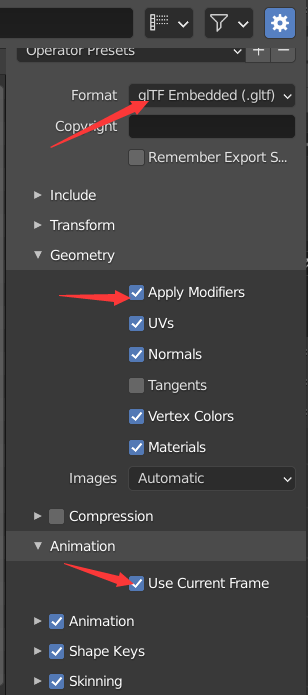
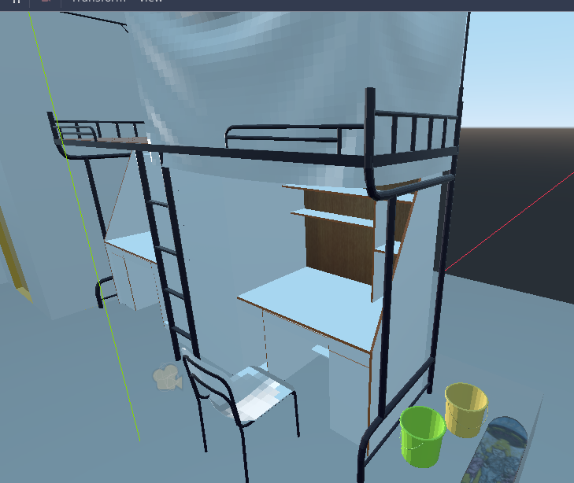
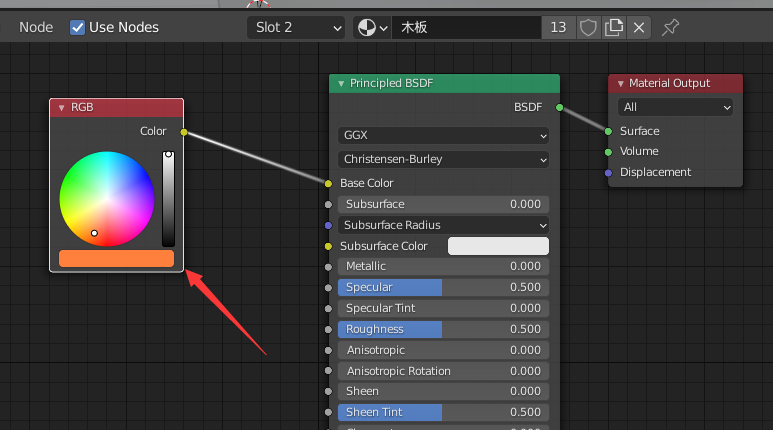
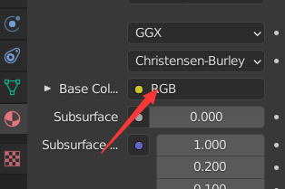
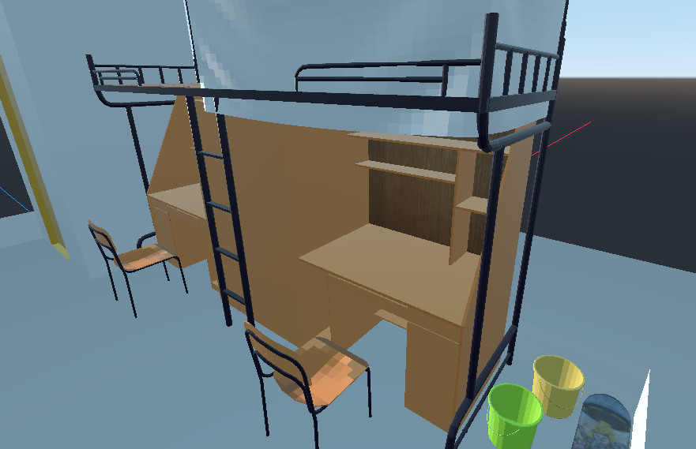
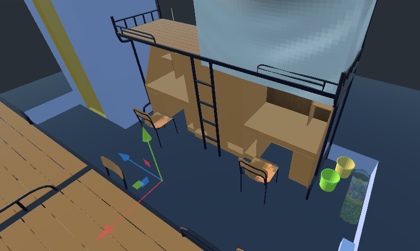

2020-10-01 Modeling 从blender导出GLTF至Godot，材质丢失 :( 把之前的小场景导出为gltf  因为有动画 所以勾上 使用当前帧 拖到godot里 会自动弄出.material文件 拖到场景中 发现有些材质是白的  到blender中看看 是一个木板材质 不小心弄出了RGB节点  删掉  再导出导入一遍  墙的材质是有的 只是颜色比较浅 难以分辨 地面的材质是没有的 把地面删掉 重建平面 上色 重新导入  就好了 。。 前一篇 Godot Lod 测试 后一篇 拦截csnd机器文章 首页 归档